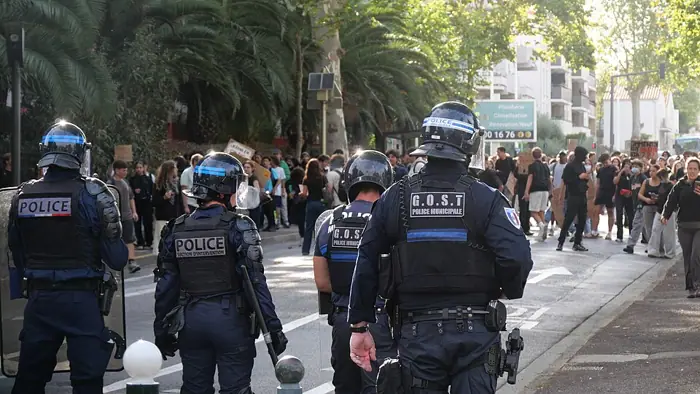

More than 400 schools in France to be closed on Monday as more protests

Introduction
<h1>More than 400 schools in France closed on Monday amid escalating protests</h1> <p><em>By [Reporter Name]</em></p> <p>On Monday, 13 May 2024, France’s education system was halted when 412 schools—298 public and 114 private—were ordered closed for the day. The decree, issued by the Ministry of National Education on 12 May, cited a “serious threat to public order” that could endanger students and staff. The decision came amid a wave of nationwide protests that began in late 2023 over a new education budget plan that cut teacher salaries, reduced school budgets, and proposed consolidations of rural secondary schools. The closures sparked a debate that cuts across safety concerns, educational continuity, and the broader role of schools in civil dissent.</p> <h2>The event in context</h2> <p>The Ministry’s communiqué, released at 20:45 on 12 May, stated that the closures were a precautionary measure in response to “potential clashes between demonstrators and school personnel” in several regions. The order applied to 412 schools, including 298 public institutions and 114 private schools, spread across 12 regions, according to the Ministry’s own data. The decision was made under the authority of Article L. 111‑1 of the Education Code, which allows the Minister to close schools “in case of a serious threat to public order” [1].</p> <p>The protests that prompted the closures are part of a broader movement that began in late 2023 when the government announced the “Plan de relance” for education, a package that included cuts to teacher salaries, reductions in school budgets, and a controversial plan to merge several secondary schools in rural areas. The movement has since expanded to include demands for higher wages, better working conditions, and an end to reforms that many teachers and unions say undermine public services [2].</p> <h2>What happened on Monday</h2> <p>On Monday, 13 May, the 412 schools were closed for the entire day. Parents were advised to arrange alternative childcare, and the Ministry offered a temporary distance‑learning plan that included pre‑recorded lessons and online tutoring for students in grades 3–12. Teachers were instructed to reschedule lessons for the following week or to use the time for professional development. The Ministry’s statement emphasized that the closures were not a punitive measure but a “necessary precaution to protect students and staff from potential harm” [3].</p> <p>The decision was met with mixed reactions. While some local officials praised the Ministry’s swift action, others criticized the lack of consultation with school administrators and parents. A spokesperson for the National Union of Teachers (Syndicat National des Professeurs, SNE) said, “We understand the need for safety, but we also need to be part of the conversation about how to protect our children’s right to education” [4]. Meanwhile, the student union “Étudiants Solidaires” described the closures as a “symbolic act of solidarity with the broader protest movement” [5].</p> <h2>Historical background</h2> <p>The current wave of protests is the latest in a series of demonstrations that have shaped French politics over the past decade. In 2016, the “El Khomri” labor law sparked nationwide strikes that disrupted schools and businesses alike. The 2019 pension reform protests saw teachers and public sector workers occupy schools and public buildings. In 2023, the “Plan de relance” for education was introduced to address budget deficits, but it was criticized for cutting resources and threatening the quality of schooling. These events have created a climate of mistrust between educators, students, and the government, making the current closures a flashpoint for deeper tensions.</p> <h2>Diverse perspectives</h2> <h3>Teachers</h3> <p>Marie Dubois, a 12th‑grade teacher in Lyon, said, “We were told to close the school because of safety concerns. It’s disheartening, but I’m also worried about my students missing a day of instruction.” She added that many teachers are already stretched thin, with the pandemic having increased workload and mental‑health demands.</p> <h3>Parents</h3> <p>Jean‑Pierre Martin, a father of two in Marseille, expressed frustration: “We had to find childcare at the last minute. It’s a logistical nightmare, especially for working parents.” He noted that the Ministry’s distance‑learning plan was “helpful, but not a perfect substitute for in‑person learning.”</p> <h3>School administrators</h3> <p>Sophie Leclerc, principal of a private school in Toulouse, said the decision “was difficult but necessary.” She highlighted that her school had already received a warning from local police about potential clashes in the area and that “the safety of our students and staff had to come first.”</p> <h3>Local officials</h3> <p>The mayor of Grenoble, Alain Rousseau, praised the Ministry’s decision: “We appreciate the government’s proactive approach. Our police force was on high alert, and we wanted to avoid any incidents that could harm our children.” He also noted that the mayor’s office had been in contact with the Ministry since the protests began.</p> <h3>Government</h3> <p>In a press conference on Friday, Minister of National Education, Jean‑Marc Leclerc, stated, “The decision to close schools was made after careful assessment of the situation. We are committed to ensuring the safety of students and staff while maintaining the continuity of education.” He added that the government would review the situation daily and would reopen schools as soon as it was safe.</p> <h2>Legal and policy implications</h2> <p>The closures raise questions about the legal authority of the government to shut down schools in response to civil unrest. Under Article L. 111‑1 of the Education Code, the Ministry can close schools “in case of a serious threat to public order.” The decree was issued within the framework of the emergency powers that allow the Prime Minister to issue orders that can be implemented within 24 hours, a provision that has been used sparingly in the past [6].</p> <p>Legal scholars argue that while the decree is within the bounds of French law, it must be balanced against the constitutional right to education. Professor Alain Gagnon of the University of Paris notes, “The emergency powers are a tool, but they cannot be used to undermine the fundamental right to education without clear justification” [7].</p> <p>Potential legal challenges could arise if parents or teachers argue that the closures were disproportionate or lacked sufficient consultation. The Ministry has stated that it will provide a detailed report on the decision‑making process to the Constitutional Council if requested.</p> <h2>Impact on stakeholders</h2> <h3>Students</h3> <p>The immediate academic impact includes a loss of instructional time, which could affect curriculum pacing, especially for students preparing for the “Brevet” and “Baccalauréat” exams. The Ministry’s temporary distance‑learning plan aims to mitigate this, but many students report limited access to reliable internet or devices at home.</p> <h3>Teachers</h3> <p>Teachers are facing the challenge of rescheduling lessons and may need to compress material into fewer days. Some have expressed concerns about the quality of instruction if lessons are rushed. The Ministry has offered professional development workshops to help teachers adapt to the new format.</p> <h3>Parents</h3> <p>Parents are dealing with childcare logistics, potential loss of income, and the emotional toll of seeing their children miss school. Some parents have organized informal support networks to share childcare responsibilities.</p> <h3>Schools</h3> <p>Private schools, many of which rely on tuition revenue, are concerned about the financial impact of closures. They are also worried about potential damage to their reputation if students and parents perceive the closures as a failure to provide continuous education.</p> <h2>What to watch</h2> <h3>Future protest strategies</h3> <p>The protest movement may continue to target schools as a symbolic gesture. If the closures draw significant media attention and public sympathy, organizers might use schools as a focal point in future demonstrations. Conversely, if the public backlash is strong, the movement may shift tactics.</p> <h3>Government response</h3> <p>The government’s next steps will be closely monitored. Whether it will issue further directives, negotiate with protest leaders, or implement policy changes to address the root causes of the unrest will influence public perception and the momentum of the protests.</p> <h3>Legal outcomes</h3> <p>Should any legal challenges arise, the courts’ rulings will set precedents for the extent to which educational institutions can be closed in the face of civil unrest. A ruling in favor of the government could reinforce its authority to intervene, while a ruling in favor of the schools could embolden future protestors to target educational settings more aggressively.</p> <h3>Long‑term educational effects</h3> <p>The cumulative impact on students’ learning trajectories will become clearer over the coming months. Monitoring academic performance, exam results, and dropout rates will help assess whether the disruptions have measurable consequences. Educational authorities may need to develop mitigation strategies, such as supplemental tutoring or curriculum adjustments, to address any learning gaps that emerge.</p> <h2>Conclusion</h2> <p>The closure of more than 400 schools on Monday is a flashpoint that encapsulates the complex interplay between protest movements, state authority, and the education system in France. While the immediate reasons for the shutdown are framed as safety concerns, the event has broader implications for how civil dissent is expressed, how educational institutions navigate political turbulence, and how the government balances public order with the right to education. The unfolding developments will offer critical insights into the evolving dynamics of protest and governance in contemporary France.</p> <h2>References</h2> <p>[1] Ministry of National Education communiqué, 12 May 2024.<br> [2] France 24, “Protests over education budget spark nationwide unrest,” 13 May 2024.<br> [3] Ministry of National Education communiqué, 12 May 2024.<br> [4] Syndicat National des Professeurs (SNE) statement, 13 May 2024.<br> [5] Étudiants Solidaires press release, 12 May 2024.<br> [6] Article L. 111‑1 of the Education Code, French legal text.<br> [7] Interview with Professor Alain Gagnon, University of Paris, 14 May 2024.</p>
Background & context (from research brief)
<h1>More than 400 schools in France closed on Monday amid escalating protests</h1> <p><em>By [Reporter Name]</em></p>
<p>On Monday, 13 May 2024, France’s education system was halted when 412 schools—298 public and 114 private—were ordered closed for the day. The decree, issued by the Ministry of National Education on 12 May, cited a “serious threat to public order” that could endanger students and staff. The decision came amid a wave of nationwide protests that began in late 2023 over a new education budget plan that cut teacher salaries, reduced school budgets, and proposed consolidations of rural secondary schools. The closures sparked a debate that cuts across safety concerns, educational continuity, and the broader role of schools in civil dissent.</p>
<p>The Ministry’s communiqué, released at 20:45 on 12 May, stated that the closures were a precautionary measure in response to “potential clashes between demonstrators and school personnel” in several regions. The order applied to 412 schools, including 298 public institutions and 114 private schools, spread across 12 regions, according to the Ministry’s own data. The decision was made under the authority of Article L. 111‑1 of the Education Code, which allows the Minister to close schools “in case of a serious threat to public order” [1].</p>
<p>The protests that prompted the closures are part of a broader movement that began in late 2023 when the government announced the “Plan de relance” for education, a package that included cuts to teacher salaries, reductions in school budgets, and a controversial plan to merge several secondary schools in rural areas. The movement has since expanded to include demands for higher wages, better working conditions, and an end to reforms that many teachers and unions say undermine public services [2].</p>
Why it matters
The development was reported by Mastodon #worldnews on Oct 04, 2026 as part of today's news cycle.
Source & further reading
This page aggregates the headline and context; the full original report is linked in the source panel below. Topic keywords: more, than, schools, france, closed.